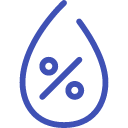
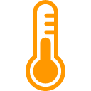

<div ng-controller="SensorMapCtrl as smc" ng-init="smc.initMap()">
  <ng-map ng-if="smc.isReady" zoom="6" center="[37.355048, -121.975229]" style="height:90%;">
    <custom-marker position="[{{p[1]}}, {{p[2]}}]" ng-repeat="p in smc.positions">
      <div class="cm" style="background:#fff;">
        <p><center><b>{{p[3]}}</b></center></p>
         {{p[5]}}% |
         {{p[6]}} Hg |
         {{p[7]}}°  
        <!-- ({{p[1]}},{{p[2]}}) -->
      </div>
    </custom-marker>
  </ng-map>
</div>